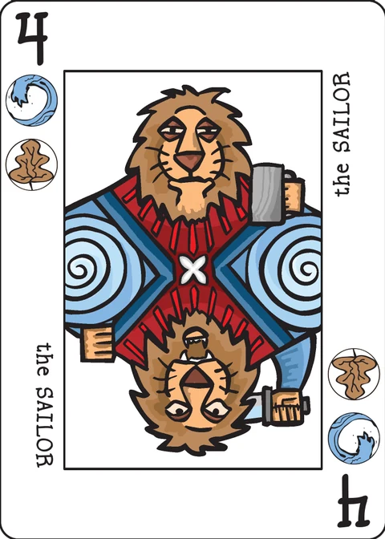

Tinker, Sailor, Soldier, Spy
Recruit team members and gain experience before adventuring through the world.
| Designed by | mrichey |
|---|---|
| Players | 1 |
| Length | 20 minutes |
| Extra material | Extended decktet and 36 suit chips, 6 of each suit |
You are the lowly tinker (the Excuse). A strange wizard has charged you, the Sailor, the Soldier, and a Spy (the Diplomat) with defeating an evil that has taken over the world. He gave you 36 magic amulets (suit chips) for your journey. Your company of four will recruit new members and master events before leaving on your adventure ridding each location of evil.
Setup
In the beginning your draw pile consists solely of the Excuse, the Sailor, the Soldier, and the Diplomat. Shuffle them and place them face down in your draw pile. All other personalities (11 cards) are shuffled and placed face down into a personality pile. The event cards (including the Market, 11 cards) are shuffled and placed face down into an event pile next to the personality pile. The Aces are shuffled and placed face down in their own pile. The remaining cards are all location cards (including the Origin and the End) and they are shuffled and placed face down into a location pile (as an alternative some people place the Origin on the top of the location pile and the End on the bottom). Create a pile of 36 suit chips (6 of each color) to represent the magical amulets.
Game play
Round 1: Recruiting and experiences
Draw the top personality card and the top event card. Look at them and then decide which one your group needs more and trash the other, it's now out of the game forever. The chosen card is now the challenge card. You defeat the evil spells cast on the personalities or gain knowledge by mastering an event by having the sum of your played cards and suit chips be equal or higher than the chosen card. You can only count chips and cards that match the suit of the current challenge card towards your sum. Place the chosen card face up in the challenger position. You can choose to quit fighting and trash the challenge card at any time after your first card is played, thus not gaining a team member or knowledge. You get one "free" mandatory play. Each play after that costs one suit chip, but the suit chip counts toward your sum for that suit. If you play a suit chip you must play a card. When you've beaten the challenge card you add it to you discard pile. When you've gone through your hand, add an Ace to your discard pile, reshuffle, and work your way through your deck. Every time you reshuffle, you must add an Ace to you hand (this represents your group's additional weariness from adventuring). When you've worked through the personality and event piles move on to round two.
Note: In the wiki's example, the player drew the Merchant and an event card. The player looked at both cards and decided to play against the merchant. The player took the top card off his hand pile and put it into play (this was a mandatory play). The Savage (3, leaves and wyrms) counts its 3 leaves towards the goal (the Merchant is 9, leaves and knots). The player decided to continue trying to relieve the Merchant from his evil curse, so he played 1 knots suit chip which allows him to draw another card and brings his sum up to 4. The player draws the next card from his hand and puts it into play. This time it is the Author (2, moons and knots), which brings the player's points up to 6 total (the Savage's 3 leaves + the 1 knots suit chip + the Author's 2 knots), which is still not enough to remove the curse. The player decides to play one leaves suit chip (bringing his total to 7) and draws from his hand. He draws the Painter (3, suns and knots) bringing his total to 10. He has removed the evil curse from the Merchant. He trashes the two suit chips he played that turn (they never return to the game), he takes the Merchant, the Savage, the Author, and the Painter and places them in a face up pile next to his hand. When his hand runs out, he shuffles an ace into the stack, and it becomes his hand.
Round 2: The journey.
Work your way through the locations of the world the same way you beat the challengers. You must defeat evil in every location to win, you cannot lose a challenge against a place. Locations are not added to your your hand after you defeat the evil magic there, you just move on to the next location. Continue to add an Ace every time you go through your hand, until they run out. The game ends when you can no longer play (out of suit chips, but need to draw more cards to remove evil magic from location) or when you've made it successfully through each location (thus removing evil from the whole world).
The extended deck
Pawns are valued at 10, Courts 11, and Crowns are 12. Aces are worth 1 and the Excuse represents you (worth zero).
Variants
Lose one additional chip of your choosing when you lose a fight.
Credits
Inspired by the solo adventure Friedemann Friese's Friday.
Links
- The BGG entry for this game
- The BGG entry for Friday
- Alternative description of the rules by M.C. De Marco
- Alternative description of the Rules by Jack North
Tips
- You may play suit chips that don't further your current goal
- Plan for the Sea and the End
- Lose some round 1 battles if the card options aren't great
Note on this implementation
The wiki page is tagged work-in-progress and mixes two phrasings for weariness: "add an Ace to your discard pile" and "add an Ace to your hand". This app follows M.C. De Marco's write-up, which resolves it: whenever you must draw from an empty draw pile, the top Ace (if any remain) is shuffled into the deck being rebuilt — one Ace per reshuffle, none once the Ace pile has run out. Everything else follows the wiki page (revision 26).
The piles are dealt exactly as the wiki describes, using the Decktet Book's "Summary of Cards by Interpretive Type" for card types: 4 cards start in your hand (the Excuse, Sailor, Soldier, Diplomat); 11 personalities (the other eight basic personalities plus the Watchman, the Light Keeper and the Consul); 11 events, including the Market (the book's events less the Origin and the End); 13 locations (the book's locations less the Market, which goes to events), including the Origin and the End; and the 6 Aces.
Values follow the extended-deck section: Excuse 0, Aces 1, number cards their face, Pawns 10, Courts 11, Crowns 12. The example text above uses the old suit names: wyrms are Daemons, knots are Crowns.
Ending: round 1 cannot be lost — you may always back down from a challenge once your free card is played (the wiki's "quit fighting"), which trashes the challenge card and gains you nothing. Round 2 is mandatory: you cannot back down from a location, and the game is lost the moment the current location is unbeatable and you can no longer play (no amulets left, or no card left to draw). Chips you spend are trashed forever; beaten challenges join your discard pile in round 1 but locations are trashed after defeat. The wiki's optional variant ("lose one additional chip when you lose a fight") is not implemented.
Tinker, Sailor, Soldier, Spy was designed by mrichey (Mike Richey). These rules are copied from the Tinker, Sailor, Soldier, Spy page of the Decktet wiki (page revision 26, 3 January 2023) so they can be read offline, under the wiki's CC BY-NC-SA 3.0 licence. The cards themselves are by P.D. Magnus, same licence.